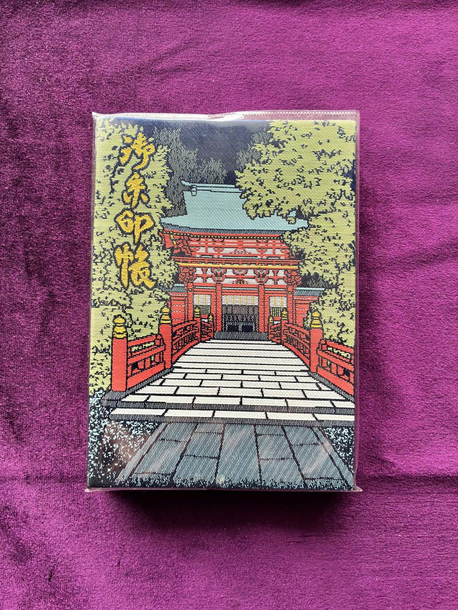
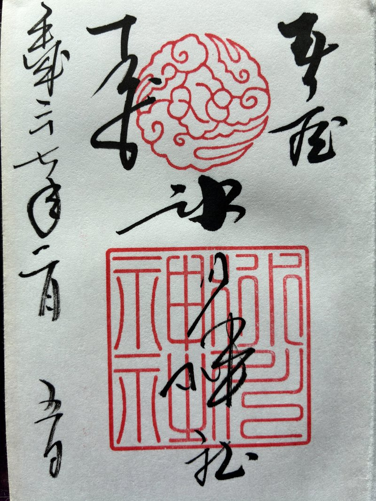
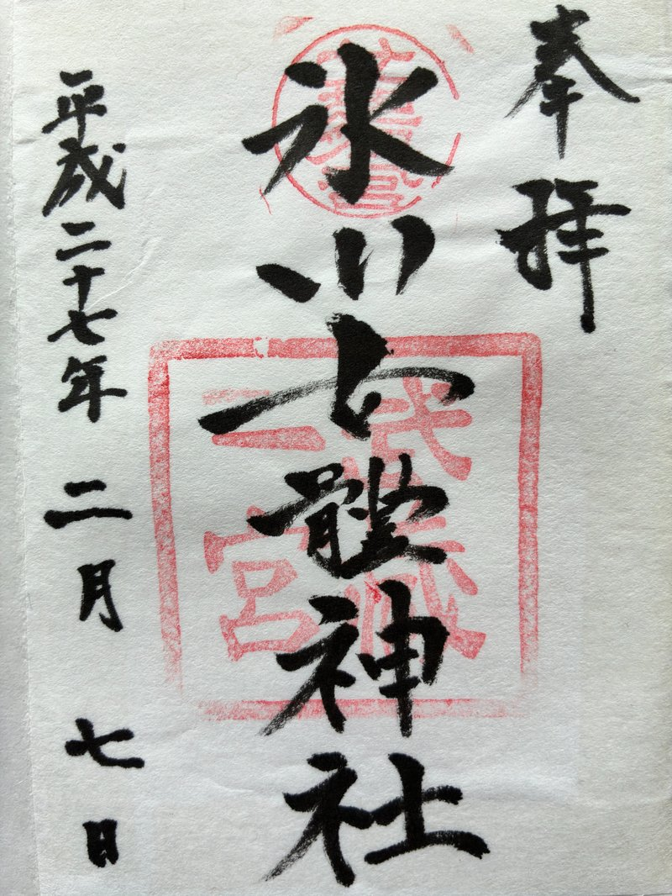
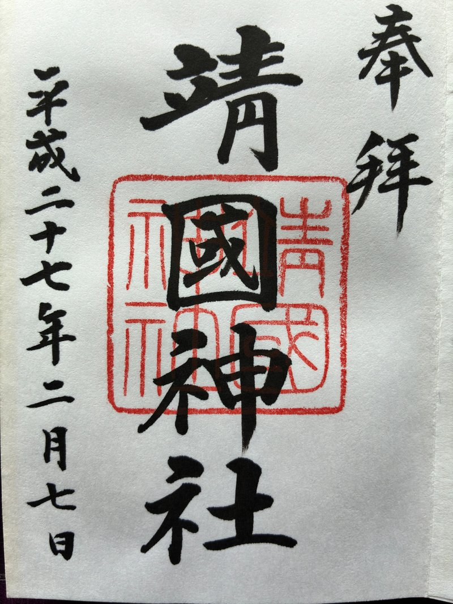

— PHILOSOPHY —
父が大切にしている、6つのこと
Six Things I Hold Dear
奈落の底まで落ちて、そこから這い上がってきた父の人生を、本当に変えてくれた6つの教え。
どれも本やセミナーで「正解」を学んだものではなく、自分が遠回りしながら、失敗しながら、それでも続けてきた中で、少しずつ「これは本物だ」と感じてきたものです。
この6つは、本棚の「実用的な学び」とは別に、サイト全体の根っこに流れている思想として置いておきます。
— PHILOSOPHY —
Six Things I Hold Dear
奈落の底まで落ちて、そこから這い上がってきた父の人生を、本当に変えてくれた6つの教え。
どれも本やセミナーで「正解」を学んだものではなく、自分が遠回りしながら、失敗しながら、それでも続けてきた中で、少しずつ「これは本物だ」と感じてきたものです。
この6つは、本棚の「実用的な学び」とは別に、サイト全体の根っこに流れている思想として置いておきます。
— PHILOSOPHY · 01 —
— 11年の神社参拝で、僕がわかってきたこと —
From Wish to Gratitude
きみへ。
父さんが神社参拝を「習慣」として始めたのは、2015年の2月7日。場所は、埼玉県さいたま市にある大宮氷川神社だった。
その時の父さんは、決して順風満帆ではなかった。家族と離れて一人になり、長く勤めたヤマダ電機を辞めて、独立した直後の時期。仕事の中身も収入も、何もかもが不安定で、「もっと売上を上げたい」「事業を盤石にしたい」と思っても、思うようにはいかない毎日だった。
そんな時、ある人の講演会で「神社参拝」の話を聞いた。半信半疑だったけれど、「まずはやってみよう」と思って、出張の合間に立ち寄ったのが大宮氷川神社だった。武蔵野國一宮で、関東の経営者の多くが参拝していると聞いて、「自分も行ってみよう」と決めた。

正直に言うと、御朱印帳というものを知ったのも、その日が初めて。一冊目の御朱印帳は、その大宮氷川神社でお授けいただいた。
それから11年。
その時の御朱印帳は、今では21冊目を数える。日付も全部入っているから、一冊ずつめくると、当時の参拝の記憶が積み重なって思い出される。あの時、父さんが何を願って、何を不安に思っていたか——御朱印の墨の濃さと一緒に、心の景色まで蘇ってくるんだ。



平成27年2月7日、同日参拝。一冊目の御朱印帳の、最初の数ページ。
正直に告白すると、最初の頃の父さんは、神社に「お願い事」をしに行っていた。
「売上が上がりますように」
「事業がもっとうまくいきますように」
「自分がもっと良くなりますように」
頭の中は、不安と願望でいっぱいだった。神様の前に立つたびに、何か力が入っていた。「お願いします、お願いします」と、力ずくで運を引き寄せようとしていた気がする。
今振り返ると、当時の父さんは、神社を「自販機」みたいに見ていたのかもしれない。お賽銭を入れて、ボタン（願い事）を押せば、何かが返ってくる——そんな期待を、心のどこかで持っていた。
でも、続けていくうちに、何かが少しずつ変わっていった。
きっかけは、はっきり覚えていない。
父さんは神社で「お願い事」をしていた。すぐに実現したこともあれば、実現しなかったこともある。でも、実現したあとに、ずっと続けていたことがあった。
それは「お礼参り」だ。
「願いを叶えていただき、ありがとうございます」——そう伝えに、改めて参拝に行く。そうすると、なんとなく、物事がもっと良い方向へ進んでいくような気がした。
ある時、ふと気がついた。
——もしかしたら、これは神社でお願い事をしなくても、自分にとって必要なタイミングで、必要なことが、きちんと用意されているのではないか。
だとしたら、こうしたい、ああしたいと、願い事を言いに来るんじゃなくて、初めから「感謝」を伝えに来るだけで、十分なのではないか——。
そう感じるようになって、父さんは神社参拝の形を、「お願い事」から「感謝」へと、静かに変えてみた。
「今日もこうして元気にご挨拶にこれて、嬉しく思います。いつもお助けいただき、ありがとうございます」
「ここまで導いてくださって、ありがとうございます」
「いただいているご縁、お助け、恵みに、感謝します」
これは今、父さんが実際に本殿の前でお伝えしている言葉だ。
不思議だった。「お願い」をやめたのに、いや、お願いをやめたからこそ、心が軽くなった。神様の前で、力を入れなくてもよくなった。自分の五感が、もう一度ちゃんと働き始めた感覚があった。
風を感じる。
その場の臭い、雰囲気を感じる。
鳥居をくぐる時の空気の変わり目に、気づけるようになる。
「お願い」をしていた頃には、見えていなかった景色だった。
11年通っていると、説明のつかないことが何度か起きる。
たくさんの参拝者がいる神社で、自分が本殿に進んだ瞬間、自然と他の人がいなくなって、自分一人になる時。
神社に着いたら、あるいは「もうすぐ着く」というタイミングで、突然の大雨や吹雪に襲われる時。でも、参拝を終えると、嘘みたいに収まる。
こういう体験を、「神秘的だ」とか「奇跡だ」と書きたいわけじゃない。父さんは、こういうことを声高に言うつもりはない。
ただ、起きたことを、事実として、ここに書いておく。
きみが将来、神社に行くことがあったら、それは思い出してくれてもいい。あるいは、きみ自身に何か似たことが起きるかもしれない。その時、判断するのはきみ自身でいい。父さんは「これは神様のおかげだ」とは言わない。でも、「ただの偶然です」とも言わない。
説明できないことが、たまに起きる。それだけは、本当のことだ。
「神社参拝をしてどうなりましたか？」
「おすすめの神社はどこですか？」
いろんな人から、こういう質問を受ける。でも、正直に言うと、父さんはうまく答えられない。
「神社に行ったから収入が上がりました」とは言えないんだ。スイッチを押したら電気がつくみたいに、神社参拝と人生の好転がはっきり因果関係で結びついているわけじゃない。
ただ、11年を振り返ると、紆余曲折はありながらも、確かに父さんの人生は、少しずつ良い方向に進んできた。収入も上がったし、個人事業主から法人にもなった。もちろん、まだまだ途上だし、今は今の課題もある。でも、振り返れば「ここまで来られた」と思える。
それが神社参拝のおかげかと言われると、わからない。
ただ、確かに言えることは——父さんの心の中に、感謝という土台ができたこと。
神社に通っていなかったら、たぶん父さんは、いつまでも「もっと、もっと」と焦って、不安に追われていただろう。今のように、「いただいているものに目を向ける」「ご縁を大切にする」「自然体でいる」ということを、習慣として身につけられたのは、神社参拝のおかげだと思う。
これは、目に見える結果じゃない。でも、人生を支える根っこの部分だ。
最近、父さんが感じていることが、もう一つある。
最初の頃は、むやみやたらと、たくさんの神社を回っていた。北海道から大阪・淡路島まで、主要な神社のほとんどに足を運んだ。淡路島より西側は、厳島神社、出雲大社、須佐神社くらいで、それ以外はほとんど制覇に近い形で参拝してきた。それくらい、参拝に夢中だった時期がある。
でも、最近は違う。
頻度自体は、以前より減っているかもしれない。今は月に5回前後、氏神様や札幌諏訪神社、北海道神宮を中心に通っている。でも、1回あたりの「質」が、明らかに上がってきた。
無心で頭を下げる時間。
鳥居をくぐる時の、空気の変わり目。
本殿の前で、ただ静かに立つ瞬間。
回数より、一回一回の参拝の中身が、ずっと深くなった。だからと言って、何ヶ月も参拝しないということはない。続けることは、続けている。
回数の多さより、質の深さと、継続することの大切さ。
これは父さんが11年かけて、やっとわかってきたことのひとつだ。
きみへ伝えておきたいことが、ひとつある。
父さんは、スピリチュアルなことを押し付けるつもりはない。「神社に行きなさい」とも言わない。
でも、事実として、父さんはこう思っている——
私たちは、「目に見えない大いなる力」によって、導かれて生きている。
それを「神様」と呼ぶのか、「宇宙」と呼ぶのか、「ご縁」と呼ぶのかは、人によって違っていい。呼び方は何でもいいんだ。
ただ、自分の人生に起きていることは、ただの偶然じゃない。良いことも、そうでないことも、その経験を通して学ぶべきことがある。
これだけは、信じている。
きみがいつか、人生に迷ったり、苦しんだりした時——「これは偶然ではなく、何かに導かれているのかもしれない」「この経験から学ぶべきことが何かあるはずだ」と、ふと思い出してくれたら嬉しい。
その時、父さんが11年通ってきた話が、少しでも支えになれば、それで十分だ。
神社参拝は、父さんにとって、今の自分の原点の一つだと思っている。
これからも、神社巡りの旅は続いていく。お気に入りの神社や、まだ行けていない神社が10社くらい残っているから、一つずつ訪ねていく。
きみがもし、いつか「神社に行ってみようかな」と思った時——
ひとつだけ、お願いしたい。
すぐに結果を求めないこと。
1度や2度の参拝で何かが変わると思わないでほしい。神社参拝は、長期的に続けて、自分の心の変化を観察するもの。長い目で見れば、報われない努力はないんだ。
そして、できれば「お願い」ではなく、「感謝」を持っていってほしい。
これは父さんが、11年かけてやっと辿り着いた小さな答え。きみは、もっと早く気づけるかもしれない。
— 父の余談 —
ここからは、ちょっとした余談として書いておく。
父さんは歴史が好きで、本を読んだり、現地に足を運んだりしてきた。そうすると、面白いことに気づく——歴史を動かした人物の多くが、神社と深く関わっているんだ。
例えば、
現代の経営者でも、松下幸之助さん、豊田章男さん、本田宗一郎さんといった方々が、深い信仰を持っていたと言われている。
特に父さんが面白いと思っているのは、織田信長と徳川家康の話だ。
尾張の小さな大名だった織田信長の、人生の転機は1560年の桶狭間の戦い。圧倒的に不利な状況だった信長は、その日の朝、熱田社（現熱田神宮）に参拝してから出陣している。そして、歴史的大勝利を収め、天下統一への道を駆け上がっていった。
ところが、1582年3月。信長は甲斐の武田攻めの際に、諏訪大社をはじめとする長野・山梨の寺社を戦禍に巻き込んでしまう。
その、わずか3ヶ月後。
1582年6月、信長は本能寺の変で、この世を去る。
一方、徳川家康はどうだったか。
1608年、家康は国家の安泰を願って、諏訪大社上社本宮に「四脚門」を寄進している。徳川将軍家は、その後も諏訪大社を篤く崇敬し、江戸時代を通じて社領の寄進などを続けた。
結果として、江戸幕府は264年もの長きにわたって続くことになった。
もちろん、これは「神社参拝のおかげだ」と単純に言えるものじゃない。歴史にはたくさんの要因がある。
でも、織田信長を天下人にまで押し上げて、そして滅ぼし、徳川家に264年もの繁栄をもたらした——その流れの中に、神社との関わりが見え隠れする。これは、ただの偶然だろうか？
歴史を見つめると、「目に見えない何か」が、確かに働いているように感じる時がある。
きみが将来、歴史を学ぶ機会があったら、英雄たちが「どんな神社を大切にしていたか」「どう向き合っていたか」という視点で見てみてほしい。きっと、面白い発見があるはずだ。
最後に、もう一つだけ。
つい先月のことだ。2026年4月、きみの高校入学式で、父さんは6年ぶりに米沢を訪れた。
入学式を終えて、その日のうちに仙台まで移動しなければならなかったから、慌ただしい1日だった。夕食を食べに行く道中、車を運転していたのは母さんで、父さんときみは後部座席に座っていた。
何気なく、父さんは言った。
「やっぱり米沢はいいな。札幌のように気が重たくないというか、数字に押しつぶされていないというか、何か開放的で伸びやかな雰囲気を感じる」
すると、母さんが運転しながら教えてくれた。
「福島から来た人が、上杉神社がこの辺を守っている、って言っていたよ」
父さんはその時、深くうなずきながら、口には出さなかったけれど、ふと思った。
——もしかしたら、上杉謙信公（上杉神社のご祭神）が、後の上杉家の基盤となった米沢の人たちを、今も守ってくれているのかもしれない。
これは、父さんが米沢で感じた直感のようなもので、もちろん事実関係はわからない。でも、生前から毘沙門天の化身と称され、義を貫いて無類の強さを誇った上杉謙信公なら、十分にあり得る話なのかもしれない。
米沢は、上杉謙信公のほか、直江兼続、上杉鷹山、伊達政宗もゆかりのある土地だ。きみが今住んでいる街は、そういう歴史の重なりの上にある。もし興味が湧いたら、そのあたりを足がかりに調べてみるのも面白いと思う。
そして、もし米沢の街を歩いていて「なんだか開放的だな」「気持ちが楽だな」と感じることがあったら——それはきっと、ご祭神の力かもしれないと、父さんは思っている。